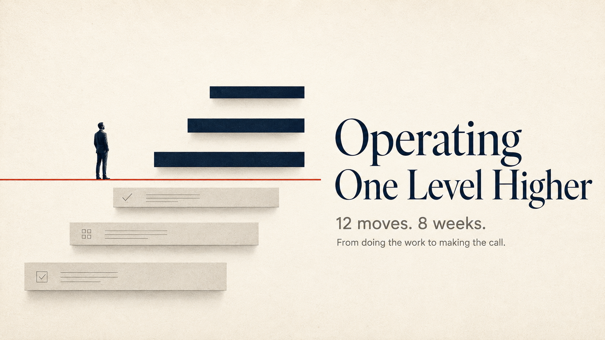

Self-paced course for senior professionals
Operating One Level Higher
Twelve things you already write and say, rewritten for the level above you. Not a leadership model. Not a mindset. Sentences you can send on Monday, each with its rules and its price. Eight weeks if you follow the schedule. One folder you keep for the rest of your career.

Hosted on TagMango. Instant access after payment.
One course, four ways in
Everything on this page teaches the same twelve behaviours. Each way in costs more and gives you more of my time. Start free, and stop wherever the next step stops being worth it.
Find the behaviour that is costing you, and get the one sentence that fixes it, by email.
FreeThree working kits for the promotion case, the annual review and the executive conversation. Buy one or all three.
₹999 each₹1,999 for all threeThis page. Twelve modules, sixty pairs, twelve artifacts, at your own pace, hosted on TagMango.
₹8,999The same twelve modules, live, over eight weeks, with ten senior technology professionals. Starts 5 December.
₹19,999founding rate, ₹29,999 from 2027
The behaviour that got you here has quietly stopped working
Somewhere around Senior Manager, the people reading you change. They stop being people who can check your work and start being people who cannot. Your boss's boss has never seen your code, your model, your migration plan or your risk register. She cannot judge the work. She can only judge what the work did to somebody she already cares about.
So the update keeps arriving, and it keeps being true, and it keeps being ignored. The technical request gets deferred a third time. The decision you raised early comes back three weeks later having consumed four hours of senior time. And at some point somebody uses the word strategic about the person who got the role instead of you, and you decide it was politics and work harder.
It was not politics. It was format.
The rules of a career change without announcing themselves, and nobody sends you the memo. This course is the memo.
What this is, precisely
Not a leadership course. There is no model of leadership in it, no personality types, no values exercise, no vision statement. It will not ask you to become a different person, and if at any point it seems to, you have misread it.
It is twelve things you already produce, rewritten. An update. An email upward. A technical request. A town hall line. A no. A disagreement. A decision under ambiguity. The line between what a machine drafts and what stays yours. The problem underneath the three problems you were handed.
Each module takes one of those and shows you two versions side by side. The version that worked for the first ten years of your career and has stopped. And the version that works at the level above you. Same facts. Same work. Same hours. Only the shape changes.
Sixty pairs in total, drawn from real rooms: a Senior Director's one slide in front of a CFO, a GCC Director's quarterly review to a VP in New York, a Senior Manager's Tuesday morning email about a vendor who just quoted eleven weeks against four. Nothing invented, nothing spun, and every after is more attackable than its before, on purpose.
What you will not find anywhere else
- Sixty before-and-after pairs from real rooms. Not principles with an example bolted on. The actual slide, the actual Monday email, the actual four-page note that lost, next to the version that would have won. You read both, you feel the difference, and you cannot unfeel it.
- The price of every move, written down. Every module ends with what the move costs you in exposure. A clear position can be wrong in public. A named consequence can be checked. No other programme tells you the bill, which is why their advice sounds right and does not get used.
- The research, with an honesty note. Each module rests on two or three findings, from Newton's tappers to Oskamp's clinicians to Bainbridge's ironies of automation, and each one says plainly which part is a finding and which part is my inference from fifteen years of watching. You are treated as somebody who can tell the difference.
- Be more strategic, decoded. The vaguest sentence in corporate life, translated into the one behaviour it has always meant, in Module 8. Most people carry that feedback for years without anybody explaining it.
- Twelve artifacts, not twelve certificates. A log, a card, a ledger, a page. Each one takes minutes a week and keeps producing dated evidence long after the course is over, including one that builds a promotion case by itself.
- The AI question inside the career question. Not AI hype. A written line between what a machine drafts, what you verify and how, and what you own no matter what produced it. Written for somebody at forty-two, with an honest word about what it means for whoever is twenty-six.
What changes, in the shape of the pairs
Every module is built on what happened when somebody rewrote one thing. These are the shapes you will recognise from the sixty pairs, and the reason the course exists.
- A business case that sat with a Finance Director for two months clears in nine days, with not one assumption changed, because somebody found out what he was afraid of and closed it.
- A Senior Manager's open question upward becomes a two-minute job for his Director instead of a two-week one, and the vendor hears the decision on Monday.
- A monolith refactor deferred three times in eighteen months gets funded, because it arrived priced in lost deals and weeks instead of technical debt.
- A Director hands a Finance owner eleven unmanaged systems and one question, explicitly does not ask for the territory, and is read as the person who sees patterns rather than the person building an empire.
- An eighteen-item annual plan becomes four things and a Not Doing List with names on it, so the costs are visible in January instead of discovered in October.
- Somebody reads their own old emails and finds three years of updates that confirmed nothing new had gone wrong and never once took a worry off anybody's list. That one was me.
None of these people worked harder. They wrote for the level above instead of the level they were on. That is the whole course, and it is the part nobody teaches, because the people who know it learned it by accident.
Why an MBA did not cover this, and coaching cannot
An MBA teaches you to read a balance sheet, size a market and run a case. It is built for the twenty-six-year-old who does not yet have a team, a budget or a skip level. Almost nothing in it is about the Tuesday morning email that decides whether your integration gets funded, because that email cannot be taught in a lecture hall. It has to be shown, one real version against another, with the reader's conditions attached.
Leadership coaching starts from the other end. It asks how you feel about the room. It works on presence, confidence, mindset. Useful, sometimes. But a coach cannot tell you that your risk committee item filed itself next to forty routine ones because you wrote elevated exposure instead of from 14 March, two of these servers stop receiving patches. That is not a mindset problem. It is a sentence problem, and sentence problems have sentence solutions.
This course sits in the gap between those two. It is the thing your best boss would have told you over coffee if he had the vocabulary for it, and most of them do not, because they learned it by accident and cannot say how.
I know this because I learned it by accident too, three years later than I needed to, by reading my own old emails after a role went to somebody else. The difference between him and me was not intelligence or effort. He wrote for the level above. I wrote for the level I was on. This course is the version of that discovery that does not cost you three years.
The twelve modules
Every module is built the same way: the gap, why the workplace responds to it, five before-and-after pairs, one sentence with blanks, its rules, its price, and fifteen minutes with your own material. The video is eight to twelve minutes. The workbook is where the course happens.
Week 1 · Be visible
- 1Outcome TranslationWhat you report stops being activity and starts being somebody else's changed week.
- 2LegibilityYour work survives being forwarded, repeated and half read by a tired person in a lift.
Week 2 · Hand over a decision
- 3Decision FrameworkYou stop sending problems upward and start sending decisions with a clock on them.
Week 3 · Make it land
- 4Reword Technical to BusinessTechnical reality arrives as money, time or risk, with a date attached.
- 5A Senior Leader's NarrativeOne sentence about where you are going, said the same way for a year, until other people say it for you.
Week 4 · Move people who don't owe you anything
- 6Reduce UncertaintyYou pay people in the only currency short everywhere: fewer things to worry about.
- 7Lateral InfluenceYou stop making the case and start making the trade.
Week 5 · Say what you won't do
- 8Deliberate EliminationYou name what you are not doing, the consequence, and the person carrying it, in January instead of October.
Week 6 · Disagree and survive
- 9Non-threatening DisagreementsYou can be right in a room, two levels up, without anybody having to lose.
Week 7 · Decide, and clear the floor
- 10Taking Calls Under AmbiguityYou decide with what you have, say how sure you are as a number, and name what would reverse it.
- 11AI DelegationYou clear the bottom of the ladder on purpose and keep the part that nothing but a person can produce.
Week 8 · Operate one level higher
- 12Connecting the DotsYou stop solving the problem in front of you and name the one underneath it, then hand the territory back.
What you leave with
- Twelve documents you actually sent, rewritten, and a working sense of the difference.
- Twelve sentences with blanks in them that you can say on Monday, each with its rules and its price.
- A personal folder with twelve artifacts running, including the one that produces two Director-level promotion cases' worth of dated evidence a year for the cost of ninety seconds every Friday.
- The vocabulary. Trapped Earner, Changed For, the deletion test, the silence outcome, the flip condition, the two-way door, the Delegation Line. The words are how the behaviour survives after the course ends.
- No certificate. Understanding was never the product.
Who this is for
Senior Managers, Associate Directors, Directors and VPs, usually twelve to twenty-two years in, in technology, data, product, digital, transformation, consulting, banking, pharma or any function where the work is hard to see from above. People doing well on paper who have been told, at least once, to be more strategic, and who have never been told what that sentence means in a Tuesday morning email.
It is built for the person who runs a team the CFO cannot evaluate, writes for a boss with nine directs and an inbox that is never empty, and has a request on the table that has been deferred longer than it should have been.
Who it is not for
- If you are under five years into your career, most of this will be premature. The behaviours the course replaces are the ones still getting you promoted, and you should keep them for now.
- If you want a leadership model, a personality framework or a certificate, this is the wrong room.
- If you intend to watch the videos and skip the workbook, do not pay for this. A module you watched and did not use is worth roughly nothing, and you will not be able to tell the difference for six months, which is the trap. The course is the fifteen minutes with your own material. Everything else is setup.
Price and what it includes
Self-paced · lifetime access
₹8,999
- Twelve lesson videos, eight to twelve minutes each
- Twelve workbooks: the full pair library, the framework, Your Turn, and the artifact for each module
- The twelve artifact templates, ready to run
- Every future update to the material, at no extra cost
Secure checkout on TagMango. Indian cards, UPI and net banking.
Or do it with me, live
The same twelve modules run as an eight-week cohort of ten, with a Saturday session each week where I read your rewrites out loud and tell you what your skip-level would have read. The next one starts 5 December 2026.
| Self-paced | December cohort | |
|---|---|---|
| The twelve modules and workbooks | Yes | Yes |
| Pace | Yours | One module a week, Saturdays 11 AM IST |
| Your rewrites | You judge them | I read every one and write back |
| Room | None | Ten people, live, 90 minutes a week |
| Price | ₹8,999 | ₹19,999 founding rate |
Questions people ask before paying
I have done leadership programmes before. What is different?
They gave you principles. This gives you sentences. You can hold a principle and still send the wrong email on Tuesday. You cannot hold "the call is between A and B, I recommend A for this one reason, it becomes wrong if X, answer by Friday or I proceed" and send the old one.
How long does it take?
Eight weeks if you do one week's material per week, which is the schedule I would follow. Each module is about an hour: the video, the workbook, and fifteen minutes rewriting one thing you actually sent. Doing it in a weekend is possible and pointless, because the rewrite needs a real document from your last month, and you only have so many of those.
Is it for people in IT services, GCCs or product companies?
All three. The sixty pairs come from all three. The switch from being judged on work to being judged on effects happens in every one of them at roughly the same level.
Will my employer pay for it?
Often. You get an invoice at checkout you can submit. If you want a two-line note to your manager on what the course covers, email hello@sayantannandi.com after you buy and I will send one.
Can I upgrade to the cohort later?
Yes. Email me with your purchase receipt and I will take the ₹8,999 off the cohort price, as long as a seat is open.
Refunds?
Seven days from purchase, no questions, if you have completed fewer than three modules. After that, no, because by then you have the material.